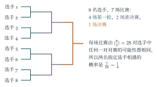

STEP II Specimen paper，第 16 题
继续之前，请先阅读题目（原题为英文）。题目载于 STEP Support Programme 的题目资料库： step.maths.org/questions/spec-s2-q16
引子
温布顿网球锦标赛（Wimbledon）有 \(128\) 名选手参加抽签。随机选出其中两人：他们在赛事中某个阶段相遇的机会有多大？你也许会尝试把每一轮相遇的概率（probability）加起来，而每一项都是“双方晋级”与“被抽在一起”这些机会的乘积。这样做是可行的，但有一个好得多的方法。数一数比赛的场数：每场比赛都由一对选手对赛，而比赛恰好有 \(127\) 场。根据对称性（symmetry），每一对选手成为其中任何一场的对赛双方的可能性都相同。因此所求的机会就是 \(127\) 除以选手配对的总数。
这道题是“数对了东西，概率问题便迎刃而解”的绝佳例子。答案 \(\frac{1}{2^{n-1}}\) 只需一行便可得出。
动笔之前
有 \(2^n\) 名选手的淘汰赛（knockout tournament）共要进行多少场比赛？（每场比赛淘汰一名选手。）
每场比赛恰好淘汰一名选手，而除了一人之外所有选手都被淘汰，所以共有 \(2^n - 1\) 场比赛。
逐步解题
阶段 1 第一轮
把选出的两名选手称为 \(X\) 和 \(Y\)。在第一轮，\(X\) 的对手是其余 \(2^n - 1\) 名选手中任何一人的可能性都相同，所以 \[\mathrm{P}(\text{相遇于轮次 } 1) = \frac{1}{2^n - 1}.\]
阶段 2 关键的对称性
每一轮的抽签都是随机的，而每场比赛都相当于掷一次公平的硬币。这个过程对待某一对选手的方式，会否与对待另一对有所不同？
不会。由于抽签是随机的，而且每场比赛的胜负机会都是 \(50\)–\(50\)，把选手重新标号并不会改变任何概率。所以任何一场指定的比赛（例如决赛）由 \(\binom{2^n}{2}\) 对选手中任何一对对赛的可能性都相同。
阶段 3 决赛
决赛是一场特定的比赛，所以它由 \(X\) 和 \(Y\) 对赛的概率是 \[\frac{1}{\binom{2^n}{2}} = \frac{2}{2^n(2^n - 1)}.\] （验算：两人都必须打进决赛，这需要他们分处不同的半区，并且各自胜出 \(n - 1\) 场比赛。）
阶段 4 在任何阶段
\(X\) 和 \(Y\) 最多只能相遇一次。这一点怎样让你可以把各场比赛的概率相加？
设 \(I_m\) 在第 \(m\) 场比赛由 \(X\) 和 \(Y\) 对赛时取值 \(1\)。在 \(2^n - 1\) 场比赛中，每一场都有 \(\mathrm{P}(I_m = 1) = \binom{2^n}{2}^{-1}\)，而这些事件是互斥（mutually exclusive）的（他们不可能相遇两次），所以 \[\mathrm{P}(\text{相遇}) = \frac{2^n - 1}{\binom{2^n}{2}} = \frac{2(2^n - 1)}{2^n(2^n - 1)} = \frac{1}{2^{n-1}}. \qed\] 以温布顿为例，\(n = 7\)，两名指定选手相遇的概率是 \(\frac{1}{64}\)。作为验算，在 \(2^n - 1\) 场比赛中，第一轮占了 \(2^{n-1}\) 场，由此得出 \(\frac{2^{n-1}}{\binom{2^n}{2}} = \frac{1}{2^n - 1}\)，与第 1 阶段的结果一致。

回顾
数比赛的场数。比赛的场数 \(2^n - 1\) 是关键的事实。
各对选手之间的对称性。每一对选手成为任何一场指定比赛的对赛双方的可能性都相同。
对各场比赛的线性性质。由于两名选手最多相遇一次，相遇的概率就是相遇次数的期望值，也就是对各场比赛求和。
背后的数学
期望次数
第 4 阶段的论证其实是一个期望值（expectation）的计算：\(X\) 和 \(Y\) 相遇的次数是若干个指示变量（indicator）之和，每场比赛对应一个；而它的期望值（由于它只取 \(0\) 或 \(1\)，所以等于相遇的概率）就是各个指示变量的期望值之和。这就是期望值的线性性质（linearity of expectation），在 第 9.11 节 和 第 12.4 节 中都曾用到。它最大的好处是完全不必理会各轮之间错综复杂的相依关系。
设有种子的赛事
现实中的赛事设有种子（seeded）：最强的选手会被编排在适当的位置，使他们要到后段轮次才可能相遇。而且现实中的比赛也不是 \(50\)–\(50\) 的。这两点都破坏了对称性，于是计算两名指定选手相遇的机会便成了一项货真价实的运算。为体育运动建立模型的统计学家正是运用这类计算来预测赛事，当中每场比赛的概率都是根据选手的评分估计出来的。对称的情况则是一条基线，用来衡量各种现实因素的影响。
思维技巧
只要选对了对象，概率往往可以用（有利对象的数目）\(\div\)（等可能对象的数目）求得。在这里，对象就是比赛和选手配对。
选择数甚么，正是组合概率（combinatorial probability）的艺术。在大学里，同一个想法会以算两次（double counting）的形式出现（第 7.9 节），也会出现在概率方法（probabilistic method）之中：在那里，某种结构的期望数目可以用来证明它存在。
延伸练习
逐轮计算。直接证明 \(X\) 和 \(Y\) 在第 \(k\) 轮相遇的概率是 \(\frac{2^{n-k}}{\binom{2^n}{2}}\)，并验证这些概率加起来等于 \(\frac{1}{2^{n-1}}\)。
固定的赛程表。假如赛程表改为预先固定（如图所示），但所有选手都被随机编入其中，答案会否改变？
一名强手。假设选手 \(X\) 每场比赛都胜出。现在 \(X\) 与 \(Y\) 相遇的概率是多少？
联赛。在一个有 \(2n\) 支球队的联赛中，每两队都对赛一次，共有多少场比赛？相应的“相遇概率”是甚么？
延伸阅读
Frederick Mosteller, Fifty Challenging Problems in Probability（Dover），书中收录了有关淘汰赛的问题。
David Spiegelhalter, The Art of Statistics（Pelican），讲述建立模型与预测。
Joseph Blitzstein & Jessica Hwang, Introduction to Probability（CRC Press；可于网上免费阅读），讲述指示变量与对称性。